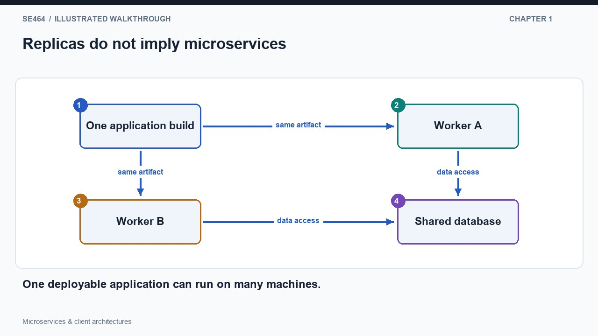
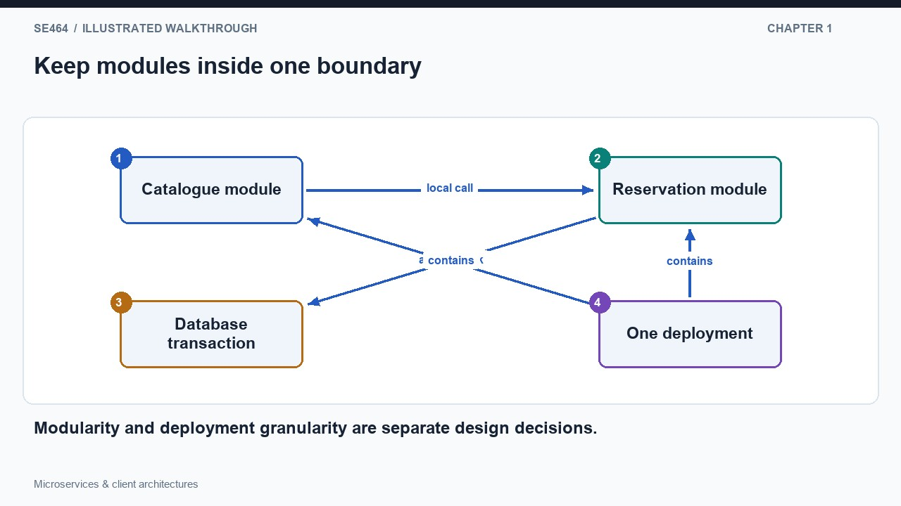
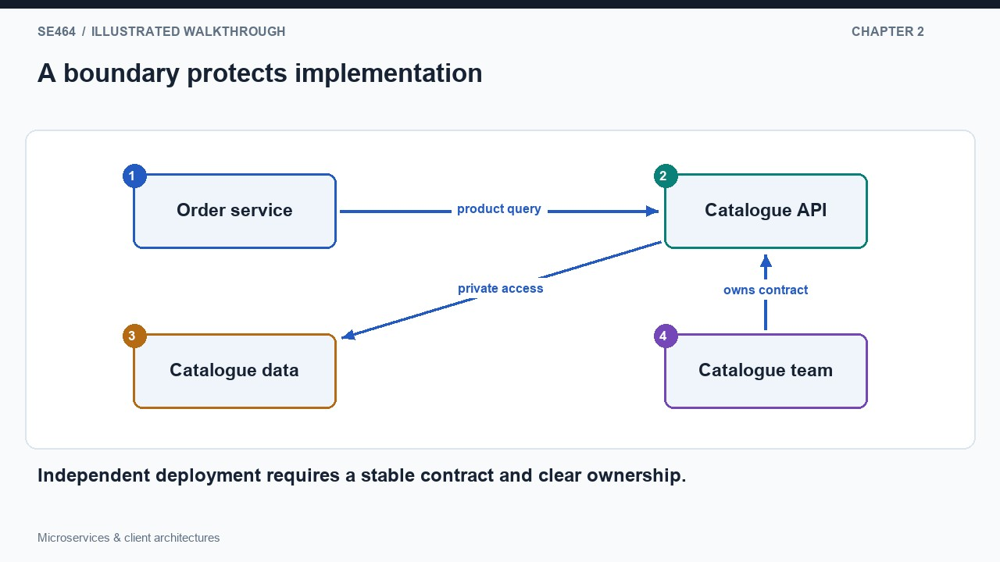
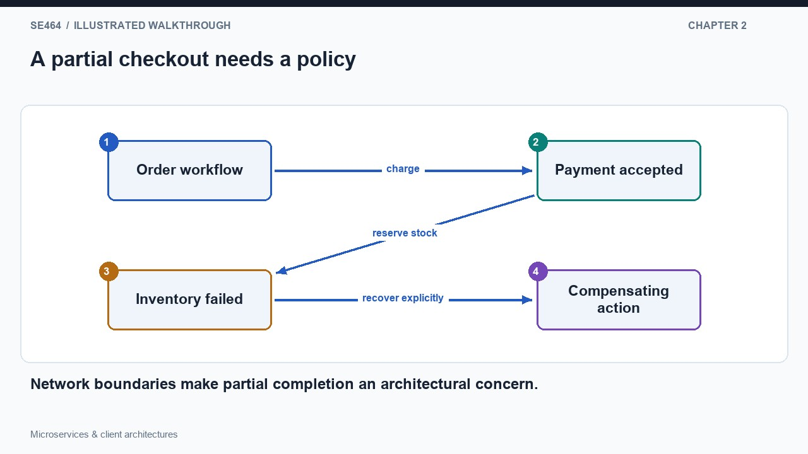
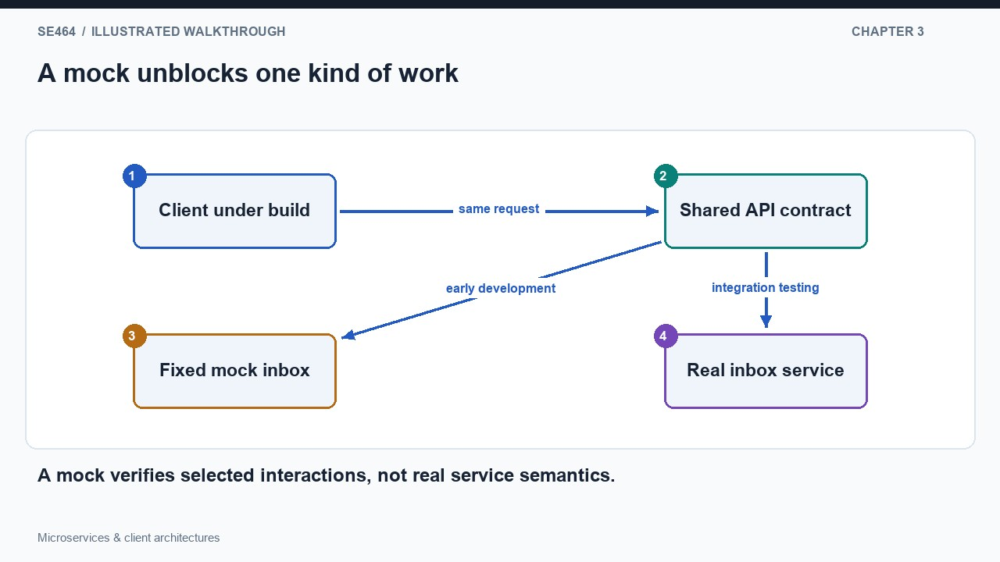
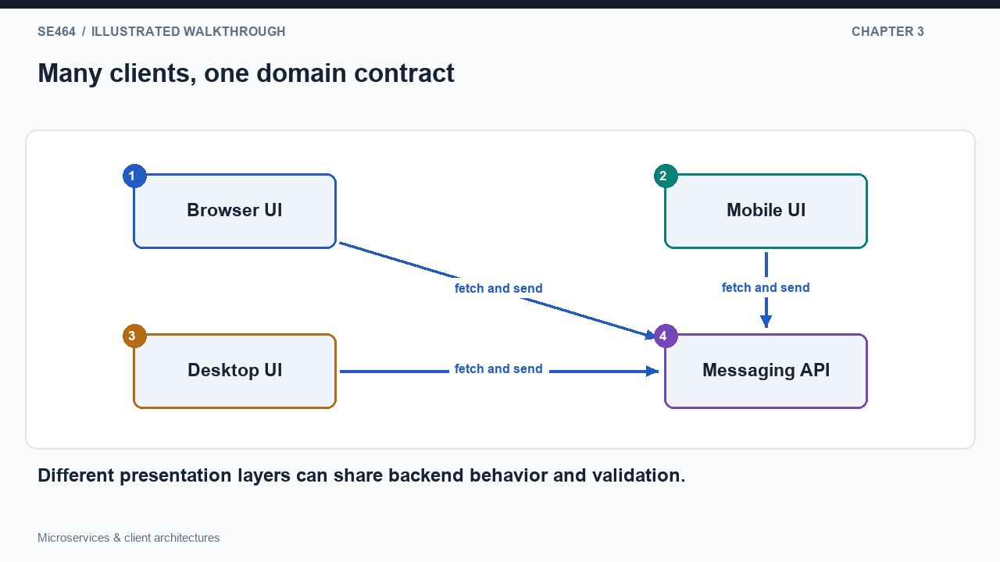

Compare a modular monolith with independently deployed services, accounting for contracts, failures, and team coordination.
A monolithic application is one principal deployable application, not necessarily one physical machine. In the historical encyclopedia design, many interchangeable workers run the same application code, each capable of handling the application's request types. A caching proxy in front and a database behind do not automatically turn that application into microservices. The diagram shows one application artifact copied to several workers. Replication increases the capacity for independent requests while keeping the code and release unit together. This distinction prevents a common category error: counting deployment machines tells us about runtime topology, while identifying independently developed and deployed responsibilities tells us about the structure of the application itself.
For a small team, keeping related functionality in one application can make development practical. A developer runs one application locally, steps through one request in a debugger, and can coordinate a database transaction without crossing service boundaries. In the diagram, catalogue lookup, reservation validation, and reservation storage are modules inside the same deployable boundary. They should still have clear interfaces; a monolith need not be an undifferentiated pile of code. The simplicity comes from sharing a runtime and deployment process, not from abandoning modularity. Before splitting the system, identify a concrete limitation that separate services would address and compare that benefit with the new coordination work the split introduces.
As the codebase and team grow, shared releases and dependencies may slow change. A modification in one area can break another, a small feature may require redeploying the whole application, and developers need agreements about shared libraries and data. These are reasons to improve boundaries, testing, and ownership; they are not proof that every module needs a network endpoint. A modular monolith can preserve local calls while clarifying responsibility. Horizontal replication can remain useful under either structure. Evaluate architecture against actual development and operational pressures: independent scaling, release cadence, failure isolation, and ownership. The useful question is which boundary should become independently deployable, not whether a large application deserves a fashionable label.


No. It creates another replica of the same application.
A service boundary turns a local collaboration into an explicit network contract. Imagine separating a shop's catalogue from its order workflow because they have distinct owners, change patterns, and scaling needs. The order service asks the catalogue for product information through an API rather than reading its private tables or calling internal functions. The diagram marks both the request boundary and the data owned behind it. Each side can change its implementation while preserving the contract, but only if callers respect that boundary. If every release still requires coordinated changes to both services, the network split has not delivered much independence and may simply have made an existing coupling more expensive.
Splitting a checkout across services also changes failures. A payment service might accept a charge before an inventory reservation fails, leaving a partially completed business operation. There is no automatic single-process rollback across those independent boundaries. The diagram stops the inventory branch after payment succeeds and then adds a compensating action such as releasing or refunding the payment under a defined policy. This is a design decision, not a generic promise that compensation perfectly erases history. Timeouts, duplicate delivery, and uncertain outcomes need explicit handling. Follow the full operation rather than evaluating each small service only in isolation, because customers experience the combined result.
Independent services can use different languages and runtime environments, and can be deployed or scaled separately. Those freedoms introduce costs in tracing, compatibility, operations, and team knowledge. A request may cross several logs and machines before failing, so correlate work across boundaries and assign ownership for failures between teams. Separate data ownership helps prevent accidental coupling, but it makes cross-service invariants and reporting more difficult. Start from cohesive business responsibilities and the information each responsibility controls. Avoid one service per class, table, or technical layer by default. A good boundary reduces the amount of knowledge that must be shared while making the unavoidable communication and failure behavior clear.


Independent deployment; the system retains release coupling despite network separation.
When several teams build a system at the same time, agreeing on API behavior allows them to make progress before every implementation is finished. A messaging client can initially call a mock inbox service that returns a fixed list of messages in the agreed response format. The diagram shows the same client first connected to a mock and later to the real service through the same contract. This helps developers build parsing, presentation, and basic error handling early. It does not prove end-to-end correctness: a mock that always returns the same inbox will not reflect newly sent messages, enforce permissions, or reproduce real persistence and concurrency behavior.
The same backend contract can serve several kinds of client. A mobile application, a desktop application, and a browser interface may all fetch messages, send messages, and authenticate through the same service API while presenting different user interfaces. In a traditional web design, a server builds HTML; in a single-page design, browser code obtains data and updates the interface. The diagram shows different presentation layers converging on the same domain operation. These choices form a continuum, and a system can combine server-rendered pages with browser interactions. Moving presentation to the browser does not move the authority to approve operations there: the backend must still validate every request.
Treat mocks as purposeful test doubles with documented limits. Include invalid input, missing resources, permission failures, slow replies, and version mismatches where those cases affect the client. Verify the contract against the real provider before release, and retain integration tests for behavior that a static mock cannot represent. Multiple clients also make compatibility important: a mobile application may remain installed long after a backend deployment. Avoid assuming all callers update together. Add fields and evolve operations with a migration plan that reflects real client lifetimes. This connects team independence to architecture: a shared API enables parallel work only when its semantics are stable enough for each participant to rely on.


No. Each client can behave differently or be bypassed; the backend enforces its own contract and authorization.
No. Replicas of the same deployable application provide scale; microservices divide responsibilities across independently deployable services.
One service may succeed while another fails or times out. A cross-service workflow needs explicit consistency and recovery choices, such as idempotent retries and compensating actions.
Contract edge cases, error/status behavior, timeouts, latency, version compatibility and integration with the real implementation.
A small team plans a new course-registration application. Compare a modular monolith with separate registration, payment, and notification services. Choose a starting design and define evidence that would justify changing it.
A modular monolith can keep local transactions and deployment simple while enforcing internal boundaries. Independent services may be justified by distinct ownership, scaling, or release needs, but require network contracts, observability, and partial-failure handling. Payment and registration coordination must be explicit. State team constraints and measure actual bottlenecks before treating distribution as an automatic improvement.
Questions-only worksheet · Worked answer sheet
A parcel platform has independently deployed tracking and customer-support services. Tracking plans to replace the response field deliveryStatus with a richer object named progress. Support upgrades weekly, while tracking deploys daily. The old field remains inexpensive to produce for one month. Which release plan best preserves independent deployment without requiring every consumer to upgrade at the same moment?
Best answer: B.
Publish the new progress field while retaining deliveryStatus with its existing meaning during a documented transition. Test both contracts, measure or inventory consumer adoption, and remove the old field only after the compatibility policy permits it. Consumers should tolerate additive fields where the contract allows. This separates deployment timing from a breaking interface change without maintaining duplicate behavior indefinitely. Coordinated releases can sometimes be justified, but they undermine the claimed independent-deployment benefit here. Renaming the field immediately or relying on mocks alone does not protect the still-running old support service.
Expand-then-contract evolution creates a compatibility interval across independently deployed components; the removal step still requires evidence and ownership.
A dashboard endpoint first checks access in 20 ms, then fetches warehouse inventory in 90 ms and carrier status in 140 ms. The last two reads are independent and can run concurrently. Rendering takes 15 ms after both return. Ignore network variability and queueing. Calculate sequential and parallel response times, then propose behavior when the carrier call takes two seconds but warehouse data remains useful.
Sequential execution takes 20 + 90 + 140 + 15 = 265 ms. Running the independent reads together takes 20 + max(90, 140) + 15 = 175 ms, a 90 ms reduction under the stated assumptions. Parallelism does not remove the slowest dependency. Set a carrier deadline consistent with the page budget and return clearly marked partial or cached carrier information only if product requirements permit it. Preserve the access check before exposing either dataset. Bound outstanding calls and retries so a slow carrier does not accumulate unbounded work across dashboard requests.
This calculation concerns a dependency graph, not a throughput guarantee. Timeout and partial-result policies determine how the architecture behaves beyond the ideal timing case.
An insurance company labels claims and reporting as separate microservices. Both have write access to the same claim tables, and reporting updates a processed flag that claims uses to decide whether a record may be edited. A reporting schema migration now blocks claims releases. Identify the coupling and propose a staged boundary repair that keeps reporting available during migration.
The services share schema and business-invariant ownership, so separate processes have not produced independent change boundaries. Assign claim lifecycle state to one authoritative owner and expose a supported API or event contract for reporting. Give reporting a derived read model whose processing progress does not directly control claim edits. During migration, populate and validate the read model alongside the existing path, define acceptable lag and reconciliation, then remove reporting’s direct writes. Avoid an immediate database split without preserving semantics. If reporting truly controls an edit constraint, model that interaction explicitly instead of hiding it in a shared flag.
A boundary is defined by ownership and contracts as well as deployment. A derived reporting model can reduce coupling but introduces freshness and reconciliation obligations.